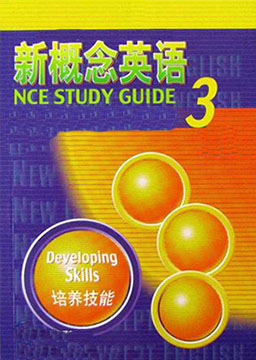

新概念英语3 (New Concept English 3)
作者：路易·亚历山大 (Louis·Alexander) [英国]
掌握英语的关键，着重分析句子之间内在的逻辑关系，使你认识到句型的精炼、优美、实用与可模仿性，从而将其有机地运用于英语写作之中；老师将进一步扩充讲解词汇、短语及语法的实战运用。
难度：
大学
长度：
短篇
分类：
社会
第1课: 逃遁的美洲狮 A puma at large
第2课: 十三等于— Thirteen equals one
第3课: 无名女神 An unknown goddess
第4课: 阿尔弗雷德·布洛格斯的双重生活 The double life of Alfred Bloggs
第5课: 确切数字 The facts
第6课: 砸橱窗抢劫 Smash-and-grab
第7课: 残钞鉴别组 Mutilated ladies
第8课: 著名的修道院 A famous monastery
第9课: 飞猫 Flying cats
第10课: “泰坦尼克”号的沉没 The loss of the Titanic
第11课: 无罪 Not guilty
第12课: 荒岛生活 Life on a desert island
第13课: “是我，别害怕” "It's only me"
第14课: 贵族歹徒 A noble gangster
第15课: 五十便士的麻烦 Fifty pence worth of trouble
第16课: 玛丽有一头小羔羊 Mary had a little lamb
第17课: 世界上最长的吊桥 The longest suspension bridge in the world
第18课: 现代艺术中的电流 Electric currents in modern art
第19课: —只贵重的宝贝猫 A very dear cat
第20课: 飞行员的先驱 Pioneer pilots
第21课: 丹尼尔·门多萨 Daniel Mendoza
第22课: 熟记台词 By heart
第23课: 各有所爱 One man's meat is another man's poison
第24课: “家丑” A skeleton in the cupboard
第25课: “卡蒂萨克”号帆船 The Cutty Sark
第26课: 征购大饼干筒 Wanted, a large biscuit tin
第27课: 不卖也不买 Nothing to sell and nothing to buy
第28课: 五镑也太贵 Five pounds too dear
第29课: 是否可笑？ Funny or not?
第30课: 幽灵之死 The death of a ghost
第31课: 可爱的怪人 A lovable eccentric
第32课: 一艘沉船 A lost ship
第33课: 难忘的一天 A day to remember
第34课: 幸运的发现 A happy discovery
第35课: 伸张正义 Justice was done
第36课: 百万分之一的机遇 A chance in a million
第37课: 开往威斯特海温的快车 The Westhaven Express
第38课: 最早的日历 The first calender
第39课: 不必担心 Nothing to worry about
第40课: 真假难辨 Who's who
第41课: 宁静田园生活的遐想 Illusions of pastoral peace
第42课: 现代洞穴人 Modern cavemen
第43课: 全保险 Fully insured
第44课: 又快捷又舒适 Speed and comfort
第45课: 新闻报道的威力 The power of the press
第46课: 自己动手 Do it yourself
第47课: 代价太高？ Too high a price?
第48课: 沉默的村庄 The silent village
第49课: 理想的仆人 The ideal servant
第50课: 新年的决心 New Year resolutions
第51课: 预测未来 Predicting the future
第52课: 实事求是 Mud is mud
第53课: 为了公众的利益 In the public interest
第54课: 是本能还是机智？ Instinct or cleverness?
第55课: 来自地球的问候 From the earth, Greetings
第56课: 河流，我们的邻居 Our neighbour, the river
第57课: 重返故里 Back in the old country
第58课: —点儿小麻烦 A spot of bother
第59课: 收藏 Collecting
第60课: 太早和太晚 Too early and too late